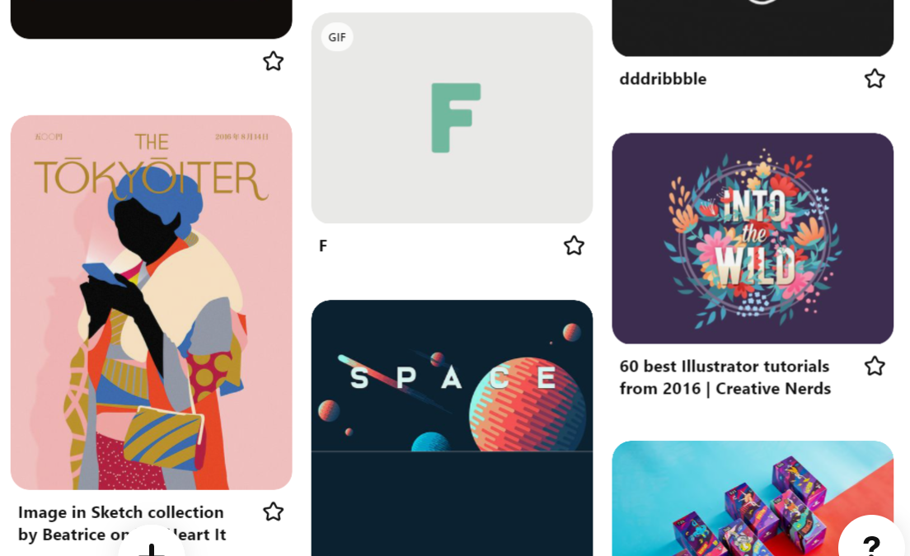
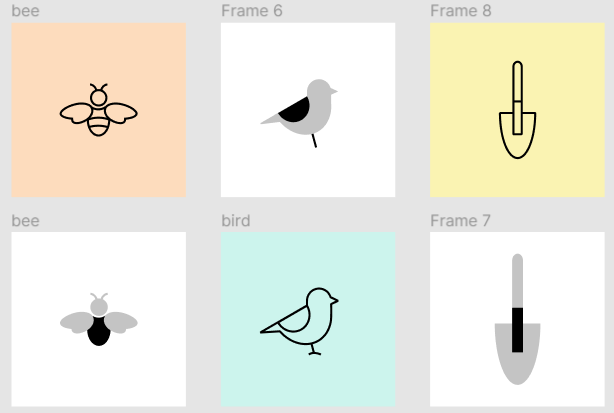
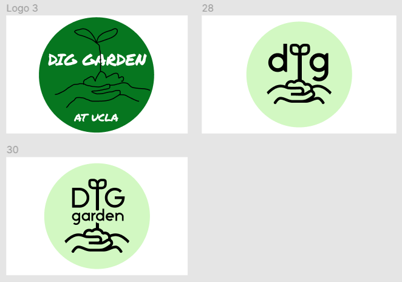
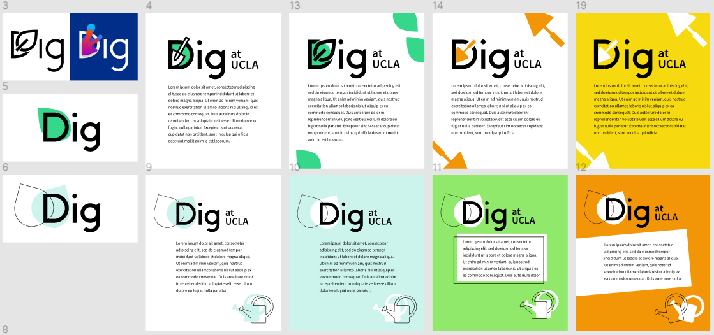

design process
The following is a typical design process for me, using a style guide I made for my college gardening club as an example.
1. research
My co-designer and I first asked the club president for his thoughts on the organization's historical identity, mission, and values. He reported that this club prided itself on being an open, welcoming, and low-pressure community where students could learn and make friends. As members of the club, we were also aware of its typical activities, membership, and general personality.
On knowing this information, we had what we needed to start creating a new visual identity.
2. sketches
We knew we wanted a colorful and playful look, while retaining a sense of organization through a degree of clean professionalism. That meant no cheesy textures, and we decided against a handwriting-esque font, opting instead for the slight personality of Stark (due to the student budget, we preferred to use public-use resources when possible).
Usually when starting a project, I like to refer to my collections on Pinterest and other platforms for design inspiration from the most recent Internet trends. Some designers like to take inspiration from other disciplines and even nature to remain original. You can see influences from these pieces in the ideation stage.
My co-designer suggested a great color palette and made some preliminary sketches for our potential iconography. Right away, I made sure that the colors were W3-compliant for color-blindness accessibility. (Working in accessibility from the start is better for everyone.) Then, we created tints of the original colors to round out our palette.


I transformed the sketches into polished icons for our visual vocabulary using various methods on Figma.
To create the logo, we returned to the ideas of community, growth, and stability that the president had expressed. My co-designer drew a sketch and I refined it into a modern-looking logo. Frame 28 is the finished product pictured below.
3. ideation
Now that we had developed a vocabulary, we had to combine these disparate elements to create a visual language for our organization. I experimented with a multitude of possible directions and permutations, while still keeping our mission and values in mind. We rejected ideas that were too slick and tech-looking, as well as those that were illegible or too childish.
The most promising ideas were saved as examples of the look we were going for. This still left significant room for new twists on the general idea, so that future designers after us could study our vision and maintain the club identity while adding their own improvisations.
4. refinement
The details of the style guide included more accessibility guidelines, such as minimum font size, spacing tips, reading level, and more. I usually use my own domain knowledge during this stage, but I refer to outside resources as needed.
Note that this particular project allowed us almost infinite artistic freedom. On other projects, I've sent mockups and prototypes back and forth between project leads and managers to elicit and receive feedback throughout the process, and especially during this and the previous stage.
in action
Once our style guide was usable, I needed to create a website for our club. While I could have developed the website from scratch, the calendar integration on Weebly was important for our purposes. In addition, using a third-party service ensured transferability to future club members who may not be familiar with web development. You can visit the website if you'd like.
Although in this case, the club website was not important enough to rigorously develop, websites that deliver a service would require usability testing. In the latter situation, I would need to conduct A/B testing, as well as focus-group interviews for understanding current participant needs (ideally before beginning the redesign process), and semi-structured user sessions to find where participants might unconsciously experience difficulties.
finished product
We ensured that the style guide was disseminated to the rest of the leadership team so that everyone was aware of our new organizational identity.
Style guides are vital for inspiring identification with and pride in an organization, both internally and externally. An organized, legible, and consistent look can communicate trustworthiness and elevate the public's recognition of a brand. Although marketing and branding are usually associated with corporations, even nonprofit organizations benefit greatly from these concepts. Still, I know that I want to apply my skills in these areas towards a cause greater than the sums of its parts. In my view, style guides are the first step. Usability is the real key to successful web design.